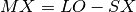
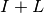

sunup – Sunrise, Sunset, Transit
This shares a lot of code with seasons.
This may have a lot to do with riseset, also.
Analysis
Compute a number of sunrise-sunset values.
Here’s an attempt at a step-by-step overview.
250-370. Get Lat, Lon, and time zone.
380-370. Some offsets are computed.
SX = 60 (AST), to 120 (PST).
Longitude is used as an estimator of SX for non-US timezones.
MX, Deg. correction for std. meridian. .
Longitude minus time zone longitude.
MC, Hrs. correction for std. meridian. .
15° = 1 hr.
MR, Rad equiv. of meridian correction. 
K, Days to degrees. or .
Neither of which are exactly correct. 365.2423 is mean solar year
including leap and non-leap. It’s either across
the board, or it’s for non-leap and
for leap.
480-670. A start date, end date, and increment in days is input, also.
680-790. Screen formatting.
800-810. For a date, N, in the date range, compute the following:
820. GOSUB 1320 to compute “long.of GP SUN & EQ TIME”.
- 1320-1440. This is a particularly complex (but accurate) Position of the Sun
calculation. There are more simpler versions of this
that are reasonably accurate.
HamCalc Version
1330. NN is day of year.
1340.
1350.
1360. 
Wikipedia “Position of Sun” Version.
- n is days since 1 Jan 2000. .
- Mean Longitude of the Sun. .
- Mean anomaly of the Sun. .
- Ecliptic Longitude. .
Convert to radians via .
HamCalc calculation of Z and EL.
1370. . . Declination of Sun.
1380. . This is an output. Equatorial Latitude of the sun, perhaps?
Note the trig identity for arcsine .
- 1390-1400. This may be the Equation of Time to provide an offset
between due south for local apparent noon and actual position.
This is an output. It’s the time of transit, perhaps.
1410. – Time (hours specifically)
1420.  – Degrees (15° = 1 hr.)
– Degrees (15° = 1 hr.)
1430. – Radians
830-850. Calculate Azimuth, T, of noon sun.
- If LA (Latitude in radians) < Z: Sun is N of observer.
. Degrees - 0 + MX Correction + .5.
MG defaults to zero.
- IF LA (Latitude in radians) >= Z: Sun is S of observer.
. Degrees - 0 + MX Correction + .5.
MG defaults to zero.
- Compute T mod 360.
860-950. Calculate Azimuth of sunrise, AZ.
960-1050. Sunrise Time, R and string RT$.
1060-1150. Sunset Time, S and string ST$.
1160. Calculate Altitude, AL, of noon sun.
- IF LA < Z: AL=FIX(90-(Z-LA)*RD-0.5!)
- IF LA >= Z: AL=(90-(LA-Z)*RD-0.5!)
RD is , the radian to degree conversion.
1170. Gosub 1460 to print date.
1180-1190. RISE is sunrise azimuth, AZ. SET is sunset azimuth, 360-RISE.
1200-1270. Print various times. S-R is hours of daylight.
Alternative Sunrise and Sunset
See “Sunrise Equation” in Wikipedia.
http://en.wikipedia.org/wiki/Sunrise_equation
Where  is hour angle at sunrise (or sunset),
is hour angle at sunrise (or sunset),  is the latitude and
is the latitude and  is the sun’s declination.
is the sun’s declination.
The procedure is this. It depends on is Longitude (west is positive) of the observer, which is reversed from many calculations where
East is positive.
Calculate current Julian Cycle
Where is the Julian date, is Longitude (west is positive) of the observer. n is Julian Cycle since Jan 1, 2000.
Note that “west-is-positive” is backwards from many other calculations.
Below, longitude is  .
.
Approximate Solar Noon
Where  is an approximation of solar noon at .
is an approximation of solar noon at .
Solar Mean Anomaly
Equation of Center
Ecliptic Longitude
Solar Transit
The Hour Angle for Solar Noon.
Declination of the Sun
Solve for to get declination of the sun.
Hour Angle
This includes corrections for refraction and solar disk diameter.
To correct for height of eye above the horizon, we apply the dip angle.
For height in feet, , or height in meters, .
Assuming 10’ above the horizon, this is -0.0606.
Note that for celestial navigation sight reductions, this is
computed as a positive number and subtracted from the observed height.
Where  is the latitude of the observer, north is positive.
is the latitude of the observer, north is positive.
Solve for to get the hour angle.
Sunset
Notes on Azimuth and Elevation
See “Position of the Sun”.
http://en.wikipedia.org/wiki/Position_of_the_Sun
To get the azimuth and elevation, we need to do a three-step operation.
Calculate coordinates in Ecliptic Coordinates.
This is essentially  above. The latitude,
above. The latitude,  for all practical purposes.
for all practical purposes.
However, the above calculation has longitude sense reversed.
Convert to Equatorial: Right Ascension,  , and Declination, .
, and Declination, .
Convert to Observer’s Horizontal Coordinates to determine where to look in the sky. Specifically, the altitude, a, is
Where is observer’s latitude, is declination,
and is the Hour Angle.
The Azimuth, A, is
The NOAA Model
See the NOAA Solar Calculation.
http://www.esrl.noaa.gov/gmd/grad/solcalc/calcdetails.html
Also, see http://www.esrl.noaa.gov/gmd/grad/solcalc/glossary.html
There are four inputs:
| phi_o: | Latitude of observer in degrees. |
|---|
| lambda_o: | Longitude of the observer in degrees. |
|---|
| z_o: | GMT offset of the observer in hours. |
|---|
| date: | datetime.datetime for which the sun’s position is requested |
|---|
The calculation works like this:
F. Julian Day for requested date + time.
G. Julian Century.
I. Geom Mean Long Sun (deg).
J. Geom Mean Anom Sun (deg).
K. Eccent Earth Orbit.
L. Sun Eq of Ctr.
M. Sun True Long (deg). 
N. Sun True Anom (deg).
O. Sun Rad Vector (AUs).
P. Sun App Long (deg).
Q. Mean Obliq Ecliptic (deg).
R. Obliq Corr (deg).
S. Sun Rt Ascen (deg).
T. Sun Declin (deg).
U. var y.
V. Eq of Time (minutes).
W. HA Sunrise (deg).
Latitude of observer is .
Alternate form? This is used in the hour angle above, as well
as the Stargazing version below, as well as the legacy HamCalc.
X. Solar Noon (LST).
Longitude of the observer is .
Timezone offset from UTC is .
Y. Sunrise Time (LST).
Z. Sunset Time (LST).
AA. Sunlight Duration (minutes).
AB. True Solar Time (min).

Where is the timezone offset of the observer.
In hours.  is hours past midnight.
is hours past midnight.
AC. Hour Angle (deg).
AD. Solar Zenith Angle (deg).
AE. Solar Elevation Angle (deg).
AF. Approx Atmospheric Refraction (deg)
AG. Solar Elevation corrected for atm refraction (deg). .
AH. Solar Azimuth Angle (deg cw from N)
Implementation
Yes. The name of the calculation module differs from the legacy applications,
sunup, seasons and riseset.
This computes more than sunrise, and includes timezones for local time
conversion.
solar
hamcalc.navigation.solar – Sunrise, Transit and Sunset.
See “Sunrise Equation” in Wikipedia. http://en.wikipedia.org/wiki/Sunrise_equation
This is the calculation of the Julian Astronomical Dates
of the transit, rise and set of the sun at a given latitude
and longitude near a given date.
Local Time and North American TimeZones
The sunrise and sunset times are in UTC. Localtime offsets need to be applied,
based on local knowledge of timezones and Daylight Savings Time
to get to proper local times.
For this, timezones are imported from the
hamcalc.navigation.solar.timezone module.
It’s quite easy to add timezones to cover other historical periods or
other places on earth.
Solar Position Test Cases
>>> import hamcalc.navigation.solar as solar
>>> import datetime
>>> today= datetime.datetime( 2013, 5, 13, tzinfo=solar.Eastern )
>>> rise, transit, set = solar.rise_transit_set( 38.98, -76.47, today )
>>> rise.isoformat()
'2013-05-13T05:55:00.457654-04:00'
>>> transit.isoformat()
'2013-05-13T13:02:13.475578-04:00'
>>> set.isoformat()
'2013-05-13T20:09:26.493502-04:00'
>>> rise.astimezone(solar.Eastern).isoformat()
'2013-05-13T05:55:00.457654-04:00'
>>> set.astimezone(solar.Eastern).isoformat()
'2013-05-13T20:09:26.493502-04:00'
>>> solar.azimuth_elevation( 38.98, -76.47, transit )
(179.99635135849053, 69.56582340941506)
>>> solar.azimuth_elevation( 38.98, -76.47, rise )
(65.23706511941509, -0.7937072477381264)
>>> solar.azimuth_elevation( 38.98, -76.47, set )
(294.86842169825667, -0.6953559721037266)
From other apps and web sites:
At 13:00, Azimuth is 178.4, Elevation is 69.6
Sunrise azimuth is 65.06, when measured from N.
Sunset azimuth is 294.62, when measured from N.
The center is 179.84 when measured from N (-0.16 from S).
Other Horizons; e.g., Nautical Twilight or Astronomical Twilight.
>>> rise, transit, set = solar.rise_transit_set( 38.98, -76.47, today, horizon=90+12 ) # Nautical
>>> rise.isoformat()
'2013-05-13T04:48:24.304646-04:00'
>>> set.isoformat()
'2013-05-13T21:16:02.646510-04:00'
From the USNO web page, the following two official times are given
for nautical twilight on May 13, 2013: 03:48 20:17
Calculation Details
http://www.esrl.noaa.gov/gmd/grad/solcalc/calcdetails.html
Inputs:
phi_o=38.98 # Latitude
lambda_o=-76.47 # Longitude
z_o=-4 # Timezone offset
date = datetime.datetime( 2013, 5, 1, 0, 6, 0)
Row from the spreadsheet. Columns A through AH (skipping H).
D E F G I J K
5/1/2013 0:06:00 2456413.67 0.13329694 39.26 5156.09 0.02
L M N O P Q R S T
1.7 40.96 5157.8 1.01 40.96 23.44 23.44 38.54 15.11
U V W X Y Z AA AB
0.04 2.88 103.76 13:03:00 6:07:57 19:58:03 830.1 1383
AC AD AE AF AG AH
165.75 124.29 -34.29 0.01 -34.28 343.29
Output from this test case.
>>> from hamcalc.navigation.solar import Position_Sun, Eastern
>>> import datetime
>>> phi_o=38.98 # Latitude
>>> lambda_o=-76.47 # Longitude
>>> z_o=-4 # Timezone offset
>>> date = datetime.datetime( 2013, 5, 1, 0, 6, 0, tzinfo=Eastern )
>>> s= Position_Sun( phi_o, lambda_o, date )
>>> round(s.E,6)
0.004167
>>> round(s.F,2)
2456413.67
>>> round(s.G,8)
0.13329694
>>> round(s.I,2)
39.26
>>> round(s.J,2)
5156.09
>>> round(s.K,2)
0.02
>>> round(s.L,1)
1.7
>>> round(s.M,2)
40.96
>>> round(s.N,1)
5157.8
>>> round(s.O,2)
1.01
>>> round(s.P,2)
40.96
>>> round(s.Q,2)
23.44
>>> round(s.R,2)
23.44
>>> round(s.S,2)
38.53
>>> round(s.T,2)
15.11
>>> round(s.U,2)
0.04
>>> round(s.V,2)
2.89
>>> round(s.W,2)
103.76
>>> s.X_hms
'13:02:59.0'
>>> s.Y_hms
'06:07:55.0'
>>> s.Z_hms
'19:58:03.0'
>>> round(s.AA,1)
830.1
>>> round(s.AB,1)
1383.0
>>> round(s.AC,2)
165.75
>>> round(s.AD,2)
124.29
>>> round(s.AE,2)
-34.29
>>> round(s.AF,2)
0.01
>>> round(s.AG,2)
-34.28
>>> round(s.AH,2)
343.29
Equation of Time Test Cases
>>> solar.eot( 73 )
-9.288136257894735
>>> solar.eot( 171 )
-1.3629763831233621
>>> solar.eot( 257 )
4.438308798331203
>>> solar.eot( 354 )
2.3235852575988147
Compared with HamCalc “wobble correction factors”
of 4,8,11 for Jan 1, Jan 10 and Jan 21.
>>> round(solar.eot( 0 ))
-3
>>> round(solar.eot( 9 ))
-7
>>> round(solar.eot( 20 ))
-11
-
class hamcalc.navigation.solar.Position_Sun(phi_o, lambda_o, date_time_tz, horizon=None)[source]
Here’s the mapping from cryptical spreadsheet names to real names.
| E : | Time (past local midnight) |
|---|
| F : | Julian Day |
|---|
| G : | Julian Century |
|---|
| I : | Geom Mean Long Sun (deg) |
|---|
| J : | Geom Mean Anom Sun (deg) |
|---|
| K : | Eccent Earth Orbit |
|---|
| L : | Sun Eq of Ctr |
|---|
| M : | Sun True Long (deg) |
|---|
| N : | Sun True Anom (deg) |
|---|
| O : | Sun Rad Vector (AUs) |
|---|
| P : | Sun App Long (deg) |
|---|
| Q : | Mean Obliq Ecliptic (deg) |
|---|
| R : | Obliq Corr (deg) |
|---|
| S : | Sun Rt Ascen (deg) |
|---|
| T : | Sun Declin (deg) |
|---|
| U : | var y |
|---|
| V : | Eq of Time (minutes) |
|---|
| W : | HA Sunrise (deg) |
|---|
| X : | Solar Noon (LST) |
|---|
| Y : | Sunrise Time (LST) |
|---|
| Z : | Sunset Time (LST) |
|---|
| Aa : | Sunlight Duration (minutes) |
|---|
| Ab : | True Solar Time (min) |
|---|
| Ac : | Hour Angle (deg) |
|---|
| Ad : | Solar Zenith Angle (deg) |
|---|
| Ae : | Solar Elevation Angle (deg) |
|---|
| Af : | Approx Atmospheric Refraction (deg) |
|---|
| Ag : | Solar Elevation corrected for atm refraction (deg) |
|---|
| Ah : | Solar Azimuth Angle (deg cw from N) |
|---|
-
hamcalc.navigation.solar.azimuth_elevation(lat, lon, date_time)[source]
Compute azimuth and elevation of the sun at a given point in time.
| Parameters: |
- lat – Latitude of observer in degrees.
- lon – Longitude of the observer in degrees.
- date_time_tz – datetime.datetime for which the sun’s position is requested.
This must include tzinfo for the observer’s timezone.
|
|---|
| Returns: | Tuple of datetime.datetime objects for rise, noon transit
and set. These are timezone aware and will have the same timezone as
the input datetime.
|
|---|
-
hamcalc.navigation.solar.datetime_to_jad(dt)[source]
Convert a datetime into a Julian Astronomical Date.
| Parameters: | dt – datetime.datetime object with
date, time and UTC timezone. |
|---|
| Returns: | floating point JAD |
|---|
-
hamcalc.navigation.solar.eot(d)[source]
An approximation for the Equation of Time.
See http://en.wikipedia.org/wiki/Equation_of_time
A positive value of the equation of time implies that a sundial is ahead of a clock.
| Parameters: | d – Day of the year, zero is January 1.
Use some_date.toordinal()-some_date.replace(month=1,day=1).toordinal() |
|---|
| Returns: | Equation of Time offset for this date. |
|---|
-
hamcalc.navigation.solar.jad_to_datetime(jad)[source]
Convert a Julian Astronomical Date into a datetime
object.
| Parameters: | jad – floating point JAD. |
|---|
| Returns: | datetime.datetime object with
date, time and UTC timezone. |
|---|
-
hamcalc.navigation.solar.rise_transit_set(lat, lon, date_time_tz, horizon=None)[source]
Compute rise time, noon transit time and set time for the sun.
| Parameters: |
- lat – Latitude of observer in degrees.
- lon – Longitude of the observer in degrees.
- date_time_tz – datetime.datetime for which the sun’s position is requested.
This must include tzinfo for the observer’s timezone.
- horizon – The horizon angle from the zenith. Default is 90.833.
Other values can be used.
- Astronomical: 108°; 18° below horizon
- Nautical: 102°; 12° below horizon
- Civil: 96°; 6° below horizon
|
|---|
| Returns: | Tuple of datetime.datetime objects for rise, noon transit
and set. These are timezone aware and will have the same timezone as
the input datetime.
|
|---|
solar.timezone
hamcalc.navigation.solar.timezone – North American Time Zones.
The sunrise and sunset times are in UTC. Localtime offsets need to be applied,
based on local knowledge of timezones and Daylight Savings Time
to get to proper local times.
This includes many of the North American DST Rules for US and Canada.
From the Python documentation.
See http://pytz.sourceforge.net for a more complete list.
To convert from UTC to local time, the following kind of thing
is done.
rise, transit, set = solar.rise_transit_set( 38.98, 76.47, today.date() )
rise.astimezone(solar.Eastern).isoformat()
This will display the rise time in North American Eastern Time.
Since the time zone data has some of the calendar rules back to 1966, the daylight savings time rules are applied as well as possible to historical
dates.
It’s quite easy to add timezones to cover other historical periods or
other places on earth.
This module defines the following timezones:
- utc, abbreviated “UTC”
- Newfoundland = NATimeZone(-3.5, “Newfoundland”, “NST”, “NDT”)
- Atlantic = NATimeZone(-4, “Atlantic”, “AST”, “ADT”)
- Eastern = NATimeZone(-5, “Eastern”, “EST”, “EDT”)
- Central = NATimeZone(-6, “Central”, “CST”, “CDT”)
- Mountain = NATimeZone(-7, “Mountain”, “MST”, “MDT”)
- Pacific = NATimeZone(-8, “Pacific”, “PST”, “PDT”)
-
class hamcalc.navigation.solar.timezone.FixedOffset(offset)[source]
Fixed offset in minutes east from UTC.
-
class hamcalc.navigation.solar.timezone.NATimeZone(hours, reprname, stdname, dstname)[source]
Superclass for North American timezone definitions.
-
class hamcalc.navigation.solar.timezone.UTC[source]
UTC Timezone definition
-
hamcalc.navigation.solar.timezone.first_sunday_on_or_after(dt)[source]
Determine if a date is within the defined period.
Legacy Output
Input values include:
Name of your location.......? ? Annapolis
ENTER: Your latitude (XX.X degrees, minus if SOUTH).....? 38.9
ENTER: Your longitude (XX.X degrees, minus if EAST)......? 76.3
Press number in ( ) to indicate your Time Zone:
(1) Atlantic
(2) Eastern
(3) Central
(4) Mountain
(5) Pacific
(6) Other
ENTER: Year to be used in calculations (yyyy)............? 2013
ENTER: First date? (No. of Month, Day)...................? 5, 1
ENTER: Last date? (No. of Month, Day)...................? 5, 20
Output Format:
Hours Sunrise (EST) Sunset (EST) Elev.& Azimuth
of and Azimuth and Azimuth of Noon Sun
Date Daylight (degrees) (degrees) (degrees)
Legacy Quirks
There’s a lot of clearly irrelevant GOSUB 1600 lines in this program. This is the middle of a routine from 1570 to 1640 to convert a date to a day number.
Variable MG is used in several equations, but never set.


![\begin{cases}
\arccos \left(\dfrac{\sin \phi_o \cos AD-\sin T}{\cos \phi_o \sin AD}\right) + 180 \mod 360 & \text{if $AC > 0$},\\
\left[540 - \arccos \left(\dfrac{\sin \phi_o \cos AD - \sin T}{\cos \phi_o \sin AD}\right) \right] \mod 360& \text{otherwise}
\end{cases}](../../_images/math/87808f7f14cf3c07f3a9ca5d67e6827a8f8f3185.png)